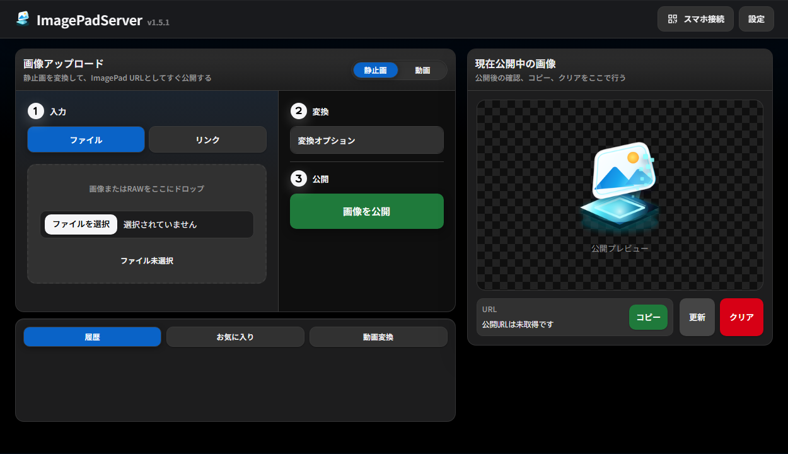
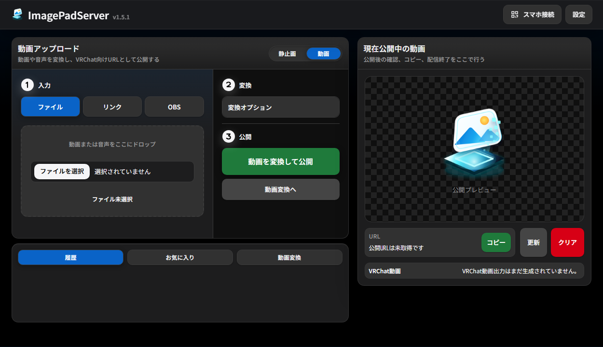
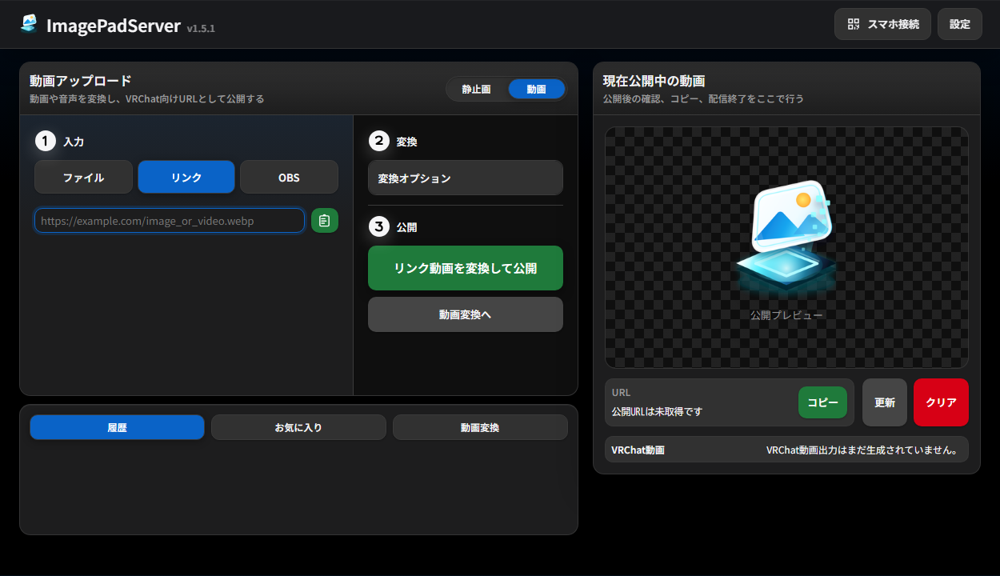
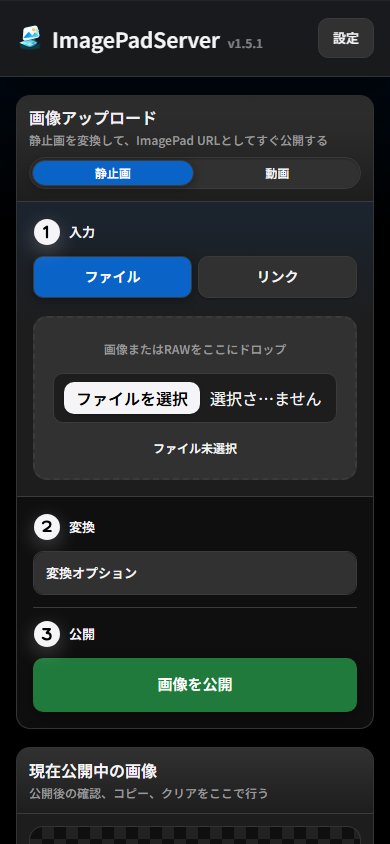

ImagePad向けURL発行
画像をアップロードすると、VRChatで扱いやすいサイズ・形式へ変換し、貼り付け用URLを発行します。
VRChat向け画像・動画・OBS配信ツール
PCやスマホからアップロードした画像・動画、またはOBSから送ったRTMP配信を、VRChatワールド内のImagePad系ツールやAVPro系ビデオプレーヤーへ渡せるURLとして配信します。
Features
画像をアップロードすると、VRChatで扱いやすいサイズ・形式へ変換し、貼り付け用URLを発行します。
画面に表示されるQRコードをスマホで読み取り、同じLAN/Wi-Fiから画像や動画を送信できます。
動画ファイルや動画サイトURLを、FFmpegとyt-dlpでHLSへ変換しながら配信できます。
OBSからRTMPで送った映像をHLS共有URLとして発行し、配信終了後は録画をVODとして履歴に残せます。
Cloudflare Tunnelで外部から読めるHTTPS URLを作成し、ルーターのポート開放なしで使えます。
アップロード履歴やお気に入りから、以前使ったメディアをワンクリックで再公開できます。
Auto / 1080p / 720p / 360pを選択でき、アップロード帯域の測定結果をAuto画質へ反映します。
Screens




Download
Windowsではビルド済みexeを、macOSではApple Silicon / Intel向けのtar.gzをダウンロードして起動できます。依存ツールが見つからない場合、FFmpeg / yt-dlp / cloudflaredはアプリのローカルフォルダへ自動配置されます。
How to use
ImagePadServerを起動します。
ブラウザUIで画像・動画をアップロードします。OBS配信ではOBSタブのサーバーアドレスとストリームキーを使います。
表示されたURLをコピーします。OBS配信では配信開始後にHLS共有URLが発行されます。
VRChatのImagePad系ツール、またはAVPro系ビデオプレーヤーへURLを貼り付けます。配信終了後のOBS録画はVODとして履歴から再利用できます。
Notes
localhostからの操作を基本にし、LAN内スマホからのアクセスにはQRコードに含まれる管理トークンを使います。
VRChatが取得するため、画像・動画の公開URLは外部から読める必要があります。公開したくないメディアは扱わないでください。
VRChat内でHLSやライブ系URLを読む場合は、AVPro系プレーヤーでの利用を想定しています。